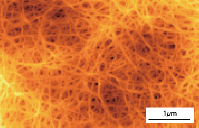
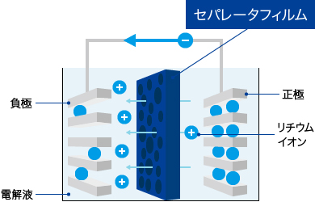

フィルム研究所
フィルム研究所は1963年に、当社のフィルム事業の基礎研究分野を担うために設立され、ベースフィルムおよびフィルム加工製品の研究を行っています。ワールドワイドの研究・技術開発ヘッドクォーターとして、情報通信、環境・エネルギー、次世代モビリティ、ライフイノベーション向けなどの新製品創出で活躍の場を拡大しています。
当社は二軸延伸ポリエステルフィルム ルミラー®を日本で初めて事業化し、二軸延伸ポリプロピレンフィルム トレファン®とともに世界の高性能・高機能フィルムをリードしてきました。さらに、二軸延伸ポリフェニレンサルファイドフィルム トレリナ®、アラミドフィルム ミクトロン®などの新素材フィルムを世界に先駆けて製品化しています。近年は、新たにバッテリーセパレータフィルム セティーラ®の本格研究を開始するなど、多岐にわたる研究・技術開発を推進しています。フィルムの研究実績の一例としては、表面突起高さの均一化により走行性と記録特性を両立したビデオテープ用ベースフィルム、ポリマーアロイ技術と延伸技術の融合によりフィルム中に微細な気泡を形成させた液晶ディスプレイ用低比重・高反射フィルム、高精度表面処理技術による印刷性と搬送性に優れた昇華型インクリボン用感熱転写フィルム、ナノオーダーのポリマーアロイ技術を駆使した高耐熱ポリエステルによる高密度磁気テープ用ベースフィルムなどがあり、フィルム用途の拡大を図ってきました。
近年では、これまで培ったポリマー分子設計、製膜プロセス、フィルム品質設計、フィルム加工の各要素技術をベースに、ナノアロイ、ナノ積層、ナノ表面制御、ナノボイドなどのナノテクノロジーによりフィルムの機能性を向上させた革新的な新製品を創出しています。代表例として、複数のポリマーをナノオーダーで積層することにより光の反射／透過を制御するナノ積層フィルム PICASUS®を創出し、ミリ波レーダーエンブレムやブルーライトカットフィルムに展開しています。また最近は、世界初の正面透過・斜め反射ナノ積層フィルムPICASUS®VTや、EV拡大に貢献する車載コンデンサ用高耐熱・高耐電圧二軸延伸ポリプロピレンフィルム、電池容量を大幅向上する金属リチウム負極電池用無孔セパレータなどの高機能フィルムを創出しています。今後も、革新的フィルム新製品の創造と環境負荷低減のソリューション提供に努め、社会の持続的な発展に貢献します。
ナノ積層フィルムPICASUS®
PICASUS®は、屈折率の異なるポリマーを約千層ナノメートルオーダー薄さで積層したナノ積層フィルム
※ 2015年高分子学会賞受賞
電気自動車（ｘEV）用極薄耐熱ポリプロピレンフィルム
東レ独自の構造制御技術により、フィルムコンデンサー用二軸延伸PPフィルムの高温絶縁特性向上と薄膜化を両立し、ｘEVの信頼性・性能向上に貢献した。
※2020年高分子学会賞受賞
微多孔ポリオレフィンフィルム
ナノメーターサイズの均一な貫通孔を持ち、リチウムイオン２次電池用セパレータとして活用されている。

セパレータフィルム表面のAFM像

リチウムイオン電池（LIB）の構造
高耐熱を実現したナノアロイ®技術適用フィルム
ナノオーダーのポリマーアロイ技術を駆使した高耐熱ポリエステルに独自のフィルム複合法で表面微細突起を制御した高密度磁気テープ用ベースフィルム
※2008年 高分子学会賞受賞
研究・開発の歩み（抜粋）
| 1959 | ポリエステルフィルム ルミラー®の生産開始 |
|---|---|
| 1963 | フィルム研究所設立 ポリプロピレンフィルムトレファン®の本格生産開始 |
| 1988 | ポリフェニレンサルファイドフィルム トレリナ®の本格生産開始 |
| 1992 | ルミラー®新表面形成技術（TOP・PTL）の実用化 |
| 1995 | アラミドフィルム ミクトロン®の本格生産開始 |
| 2003 | 車載コンデンサ用極薄耐熱トレファン®の生産開始 |
| 2006 | 高密度磁気テープ用 高耐熱ナノアロイ®フィルムの生産開始 |
| 2008 | 金属光沢調ナノ積層フィルムの生産開始 |
| 2012 | タッチパネル用・次世代フィルムの生産化と拡大 |
| 2017 | バッテリーセパレータフィルムセティーラ®の本格研究開始 |
| 2020 | 環境配慮型ポリエステルフィルム「Ecouse®」シリーズを販売開始 |